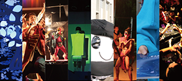

九州大学大橋キャンパス第12回「芸工祭」
２０１５年１１月２１日（土）・２２日（日）
Ｒｅ：芸工ってなに？
芸工祭は、おかげさまで今年で第12回目を迎えることができます。
今年の芸工祭のテーマは「Ｒｅ:」
『芸工って何？』『何を学んでいるの？』
芸工祭は、芸工生が出した答えです。
芸工祭とは
芸工祭とは、九州大学芸術工学部の学生が作り上げる学園祭のことです。
サークルによる出店やフライパンライブはもちろんのこと、
芸工生の研究内容や授業で制作した作品を紹介する”芸工紹介展”、
また、学祭企画とよばれる様々な団体によるショーや展示など、
一般的な大学祭とは一味違った学祭となっています。
芸工祭オリジナルキャラクター、「芸子ちゃん」とふれあうこともできます。
※掲載画像は昨年度のものです。
学祭企画

芸工祭には学祭企画と呼ばれる団体が、様々な催しで芸工祭を盛り上げます。
※企画の詳細は当日配布するパンフレットをご覧ください。
21日 / CBA(①10:00〜10:45②11:30〜12:15)、2研企画(16:00〜21:00)
、噴水企画(19:00〜21:00)
22日 / DANPA(15:00〜18:30)、火祭(19:00〜20:30)
芸工紹介展
芸術工学を知ってもらうための展示会を毎年開催しています。
今年度のテーマは「TRANSMIT」。
「伝えること」をコンセプトにし、学生の作品や研究紹介を展示しています。
５号館 <入場無料>
21日 / 12:00〜17:00 22日 / 10:00〜15:00
フライパンライブ
フライパンと呼ばれる広場にステージを作り、
ライブやダンスなどのパフォーマンス、女装コンなどのイベントを開催します。
タイムテーブルはこちら
フライパン広場
<入場無料>
21日 / 10:30〜18:00 22日 / 10:00〜16:00
わくわくワークショップ
例年大好評を頂いております、親子で楽しめるモノ作りワークショップ
老若男女どなた様でも楽しめるものを計画しております。
詳細は決まりしだいお知らせいたします。
７号館１階ワークショップ <参加無料、事前申し込み不要>
22日 / 10:00〜16:00
アクセス方法
開催地
九州大学大橋キャンパス
★JRでお越しになる場合
鹿児島本線・竹下駅より...徒歩１０分
西鉄天神大牟田線・大橋駅より...徒歩５分
★西鉄バスでお越しになる場合
「塩原４丁目」バス停より...徒歩５分
※キャンパス内には一般駐車場はございません。
あらかじめご了承ください。
最新情報は、芸工祭実行委員会である５研が運営するFacebook、Twitterにて更新します。
下記のアイコンがリンクになっております。お問い合わせ等も、以下のSNSを通してご連絡ください。